AWS CloudFormation makes cloud provisioning simple and scalable by leveraging both automation and configuration as code. Defining your cloud infrastructure and applications as code simplifies repetitive DevOps tasks and gives you a single source of truth for app and environment configuration.
This makes it more important to make sure your infrastructure as code (IaC) resources follow security best practices—your CloudFormation configuration is now another part of your codebase, and should be tested and scanned for errors and risks just like any other code review.
With Bridgecrew, you can scan your IaC codebase and deployed resources, find misconfigurations, and fix issues fast. In this article, we’ll walk through the process of configuring Bridgecrew to scan a CloudFormation deployment, run the scans, find issues, and fix them.
Infrastructure as code with CloudFormation
CloudFormation lets you define your AWS infrastructure with templates, which you can check into version control or store in S3 buckets.
CloudFormation templates are JSON or YAML files. For instance, the following template defines an S3 bucket:
{ "AWSTemplateFormatVersion" : "2010-09-09", "Description" : "AWS CloudFormation Sample Template: Sample template showing how to create a publicly accessible S3 bucket.", "Resources" : { "S3Bucket" : { "Type" : "AWS::S3::Bucket", "Properties" : { "AccessControl" : "PublicRead", "WebsiteConfiguration" : { "IndexDocument" : "index.html", "ErrorDocument" : "error.html" } }, "DeletionPolicy" : "Retain" } }, "Outputs" : { "WebsiteURL" : { "Value" : { "Fn::GetAtt" : [ "S3Bucket", "WebsiteURL" ] }, "Description" : "URL for website hosted on S3" }, "S3BucketSecureURL" : { "Value" : { "Fn::Join" : [ "", [ "https://", { "Fn::GetAtt" : [ "S3Bucket", "DomainName" ] } ] ] }, "Description" : "Name of S3 bucket to hold website content" } } }
You can create this bucket in seconds using the AWS CLI:
aws cloudformation create-stack --stack-name myteststack --template-body file:///home/testuser/mytemplate.json
The benefit of using CloudFormation to define your infrastructure is that it allows you to audit the templates before they are deployed. When you do that, you’re baking best practices for security into your development and deployment lifecycle.
Getting started with Bridgecrew
CloudFormation gives us total control to create, change, and delete resources in AWS. With CloudFormation, it’s easy to pick and deploy any of the hundreds of templates readily available from the AWS sample templates. Because these templates are built solely with functionality in mind, it’s also easy to forget important security configuration and end up having an insecure service running in production.
That’s why scanning your CloudFormation templates before deployment is so important. Bridgecrew integrates into your workflow and stops security issues before they can do any harm.
To get started, check that you have the following prerequisites:
- Python 3 and pip
- An AWS account and an IAM user that can make programmatic calls
- A Bridgecrew account–you can sign up for a free here
The Bridgecrew CLI works on Windows, Mac, and Linux. You can install it with pip:
pip install bridgecrew
or
pip3 install bridgecrew
If you run into problems, try the alternate install instructions.
Analyzing CloudFormation configuration with Bridgecrew
In this tutorial, we’re going to start by testing Bridgecrew CLI with the CfnGoat template, Bridgecrew’s vulnerable-by-design project created to help demonstrate common errors and security best practices in AWS CloudFormation.
First, clone the repository:
git clone https://github.com/bridgecrewio/cfngoat.git
To run Bridgecrew CLI, you’ll need the Bridgecrew API token before you can report back to Bridgecrew. To get it, go to Integrations > API Token while logged in your Bridgecrew account and copy the token.
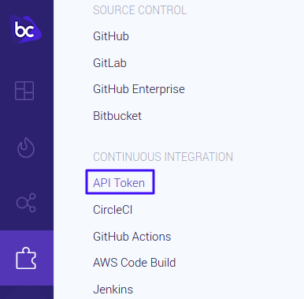
Use the token in the command to send the results to Bridgecrew:
bridgecrew -f cfngoat.yaml --bc-api-key YOUR_API_KEY
And run Bridgecrew:
bridgecrew -f cfngoat.yaml --framework cloudformation --bc-api-key YOUR_API_KEY
You can also scan entire directories with -d:
bridgecrew -d cfn --framework cloudformation --bc-api-key YOUR_API_KEY
Bridgecrew comes pre-built with hundreds of AWS security and compliance policies. To get the list of security checks, use -l or –list:
bridgecrew --list
In many instances, you may only be interested in running a select few checks. In that case, you can add the -c or –check option:
bridgecrew -f cfngoat.yaml -c CKV_AWS_1,CKV_AWS_2 --bc-api-key YOUR_API_KEY
Or, if you want to run all but some checks, use the –skip-check option:
bridgecrew -f cfngoat.yaml --skip-check CKV_AWS_1,CKV_AWS_2 --bc-api-key YOUR_API_KEY
The results show all the failed checks, as well as link to a guide explaining the cause and how to fix them. In some cases, the report includes the snippet of code that is misconfigured:
Check: CKV_AWS_56: "Ensure S3 bucket has 'restrict_public_bucket' enabled" FAILED for resource: AWS::S3::Bucket.LogsBucket File: /cfngoat.yaml:644-662 Guide: https://docs.bridgecrew.io/docs/bc_aws_s3_22 644 | Type: AWS::S3::Bucket 645 | DeletionPolicy: Delete 646 | Properties: 647 | BucketName: !Sub "${AWS::AccountId}-${CompanyName}-${Environment}-logs" 648 | AccessControl: LogDeliveryWrite 649 | VersioningConfiguration: 650 | Status: Enabled 651 | BucketEncryption: 652 | ServerSideEncryptionConfiguration: 653 | - ServerSideEncryptionByDefault: 654 | KMSMasterKeyID: !Ref LogsKey 655 | SSEAlgorithm: aws:kms 656 | Tags: 657 | - Key: Name 658 | Value: !Sub "${AWS::AccountId}-${CompanyName}-${Environment}-logs"
Integrating Bridgecrew with AWS dev tools suite
In the previous section, we used the Bridgecrew CLI to do some quick scanning before committing a change into the code repository. However, forcing every developer to run a scan in their machines ad hoc isn’t conducive. We need a smarter approach, one that continuously audits code.
Bridgecrew supports all popular version control systems and CI/CD platforms. We can, for instance, set up Bridgecrew to run every time a developer commits into a GitHub repository.
This section will show you how to continuously scan CloudFormation templates by integrating Bridgecrew with AWS CodeCommit and AWS CodeBuild.
The integration takes three steps:
- Upload your code to CodeCommit
- Configure CodeBuild to audit your code
- Set up CodePipeline to rerun the audit on every change
Uploading your code to CodeCommit
AWS CodeCommit is a Git hosting and version control system like GitHub or GitLab, but it only works with private repositories. You can integrate Bridgecrew with CodeCommit to automatically scan your CloudFormation templates for security and compliance errors.
To integrate Bridgecrew with CodeCommit, you’ll first need an IAM user with access to CodeCommit. Open your AWS IAM service and configure access via SSH keys or a user+password combination.
Second, go to the AWS CodeCommit service and create a repository:
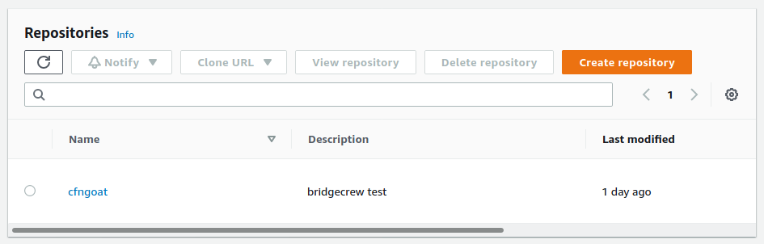
Third, upload your code to the new repository:
git remote remove origin git remote add origin https://git-codecommit.<YOUR_REGION>.amazonaws.com/v1/repos/cfngoat git push origin master
For the best results, add the repo-id and branch options so that Bridgecrew shows the correct details in the dashboard:
bridgecrew -f cfngoat.yaml --bc-api-key YOUR_API_KEY --repo-id AWS_ACCOUNT/REPO_NAME--branch master
The repository ID can take any form as long as it follows the owner/name format. In AWS, the owner is usually the account ID or an alias.
Once integrated into CodeCommit, we’re ready to set up our continuous workflow using CodeBuild and CodePipeline.
Configuring CodeBuild to scan your templates
AWS CodeBuild is a CI/CD platform that can build projects, run jobs, and deploy infrastructure. We’re going to use it to scan the CloudFormation templates before deployment.
First, retrieve your connection command. To do this, open the integrations menu in your Bridgecrew account and select AWS Code Build:
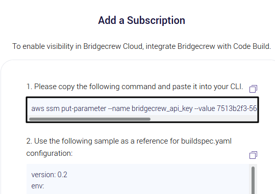
Copy the command as shown and run it in your terminal:
aws ssm put-parameter --name bridgecrew_api_key --value YOUR_API_KEY --type SecureString
Note: if the command fails, your IAM user may not have the correct permissions to create parameters in AWS Systems Manager (SSM). In that case, you’ll need to add write permissions to the user.
Next, copy the YAML code shown on the lower half of the screen and keep it handy:
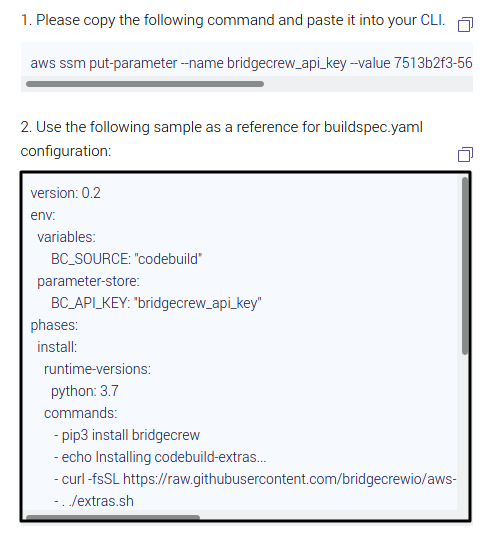
Now go to your AWS CodeBuild service and select Create a Build Project:
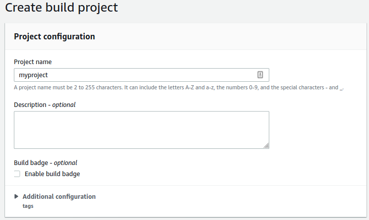
Select your CodeCommit repository:

Under Environment Image, select Managed Image. Then select Ubuntu > standard:4.0.
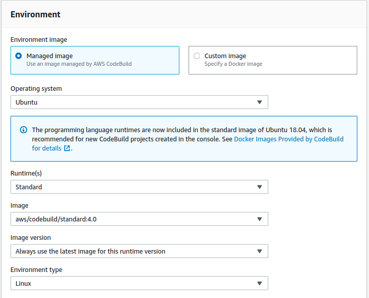
Let AWS create a service role for you. Take note of its name.
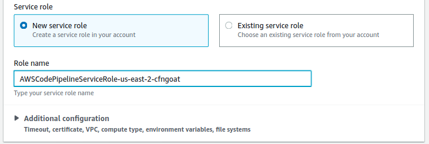
Next comes the build spec. Select Insert Commands, then Switch to Editor and paste the YAML code you copied from Bridgecrew earlier. Overwrite the previous contents completely.
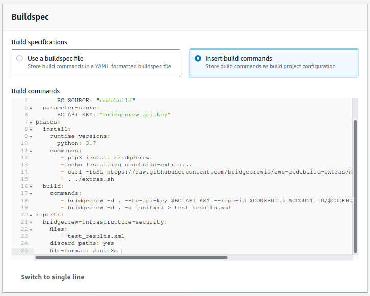
Select Create Build Project to complete the setup.
You’ll need to grant access to the role that CodeBuild just created. To do that, go back to the IAM service and find it:
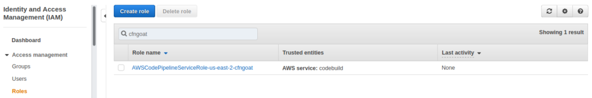
Select Add Inline Policy and type “Systems Manager” in the search box.

Check the GetParameters read permission.
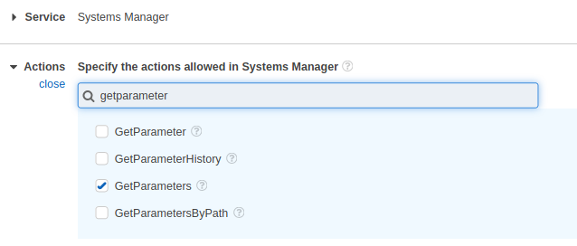
Scroll down, and under Resources, choose Specific. Select on Add ARN. Fill in the region and account number. Type “bridgecrew_api_key” as the parameter name:
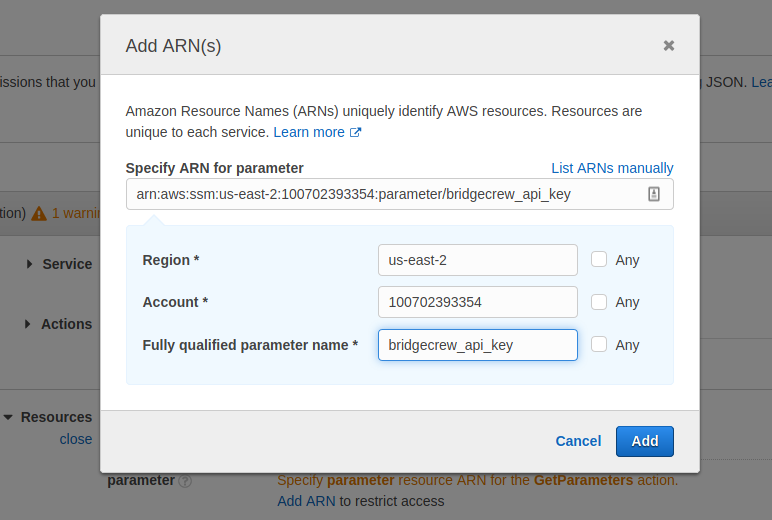
Select Add, then Review Policy > Create policy.
Setting up CodePipeline to trigger scans
If you want CodeBuild to run the scan on each update, you’ll need to configure AWS CodePipeline. You can skip this step, but if you do, you’ll only be able to run manual scans.
To set it up, go to AWS CodePipeline and select Create Pipeline:

After giving the pipeline a name, select Next and choose AWS Code Commit as a source provider and your repository:
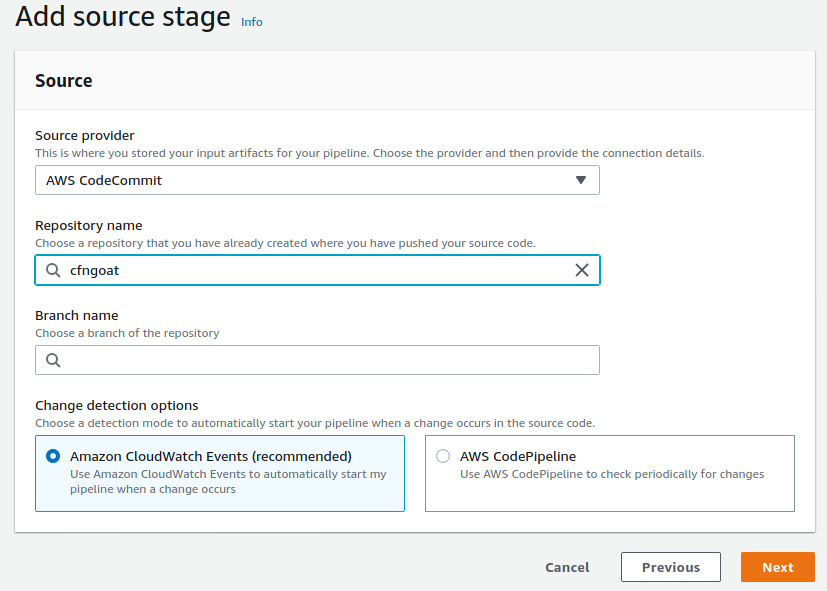
Next, select the region and the CodeBuild project name:
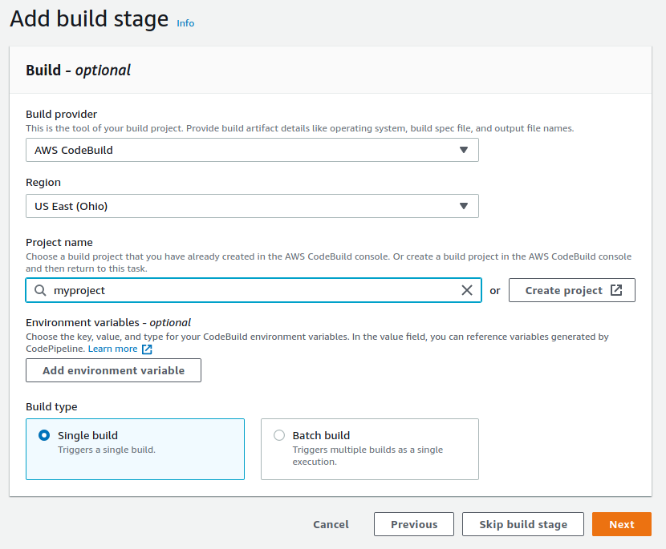
Unless you plan to deploy right now, you may skip the deployment stage.
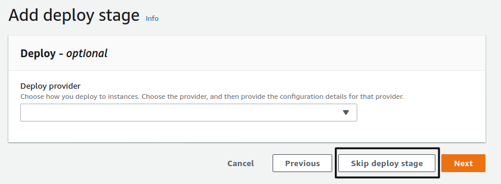
Select Create Pipeline, which should start immediately.
If everything goes well, the pipeline should fail at the build stage. This is normal as the CfnGoat code is purposely designed with security flaws. Once the issues are fixed, the pipeline status should turn to green.
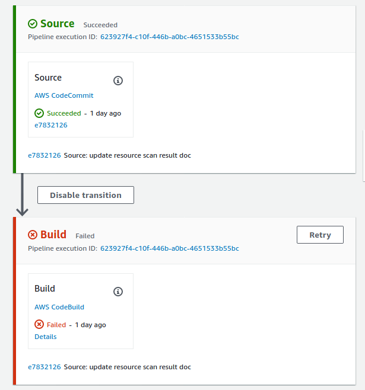
You can see the error report on the build job logs.
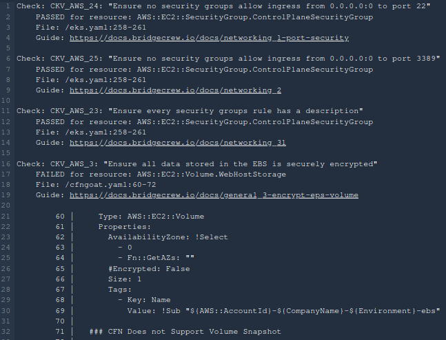
The first check that failed in our run, CKV_AWS_3, tests whether the data in AWS Elastic Block Store (EBS) is encrypted or not. In our example, the data isn’t encrypted, and thus the check fails.
You’ll also find these errors in your Bridgecrew account where you can filter by account, type, severity, and more.
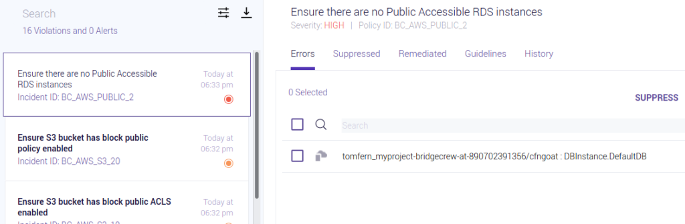
The Bridgecrew platform also provides robust compliance reporting and dashboards to help you track your security posture in both build-time and run-time.
Addressing security errors in AWS with Bridgecrew
As we’ve shown so far, Bridgecrew provides the policies and workflow to audit your CloudFormation templates before deployment. But what about the infrastructure that’s already running?
To get continuous AWS cloud security monitoring, connect Bridgecrew with your AWS account.

Select Launch Stack to run the AWS Read-Access CloudFormation Stack. You will then be prompted to create a CloudFormation template pre-populated with Bridgecrew connection details.

Select the checkbox next to “I acknowledge…” to permit the creation of IAM resources and Create Stack.
Once integrated, Bridgecrew will enable commit to cloud coverage so that you can address security errors no matter where in the development lifecycle they are. Bridgecrew includes hundreds of checks and runs through the CIS Amazon Web Services Foundations Benchmark security assessment and adds more than 40 tests covering regulations such as HIPAA and GDPR.
Next steps
We’ve learned how to bake in automated security checks into AWS deployments using Bridgecrew. Now you can keep your infrastructure secure as it grows.
Check out these resources to continue learning about cloud security: